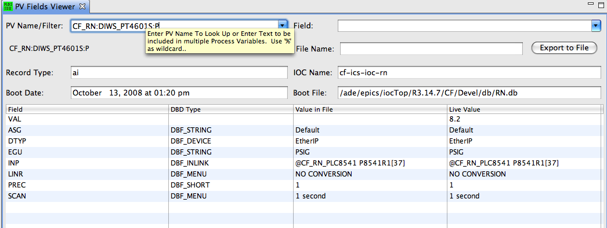

Overview
The PV Fields viewer displays all the information that the SNS
'crawler' has obtained for an EPICS record:
- Database file that defined the record
- Time when information was last updated
- Record type
- Fields of the record that were defined in the database file
For each field of the record that was defined in the database file,
the current, live value is also displayed.

Usage
Enter a PV name as suggested by the tool tip.
The tool will show information for that record.
By default, it does that for all fields that were
defined in the DB file.
In addition, one can enter specific field names
in the "Field" box, for example
"VAL, LOLO, LOW, HIGH, HIHI, LLSV, LSV, HSV, HHSV",
and then you see those field's current value
and -if available- the original value from Oracle.